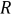
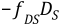
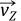
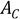

Hydrodynamic effects may occur because the structure moves in a motionless fluid, the structure is fixed but fluid motion is present, or both the structure and fluid are moving.
Fluid motion consists of two parts: current and wave motions. Current is input by giving the current velocity and direction (input as W(i) and θ(i)) at up to eight different vertical stations (input as Z(i)). (All input quantities referred to in this section not otherwise identified come from the OCTYPE, OCDATA, and OCTABLE commands.
The velocity and direction are interpolated linearly between
stations. The current is assumed to flow horizontally only. The wave
may be input using one of the wave theories (Kw, input as KWAVE on the OCDATA command) in the following table :
Table 12.11: Wave Theory Table
| Wave Theory | Kw |
|---|---|
| Small amplitude wave, unmodified (Airy wave theory), (Wheeler([35])) | 0 |
| Small amplitude wave, modified with empirical depth decay function, (Wheeler([35])) | 1 |
| Stokes fifth order wave, (Skjelbreia([31])) | 2 |
| Stream function wave, (Dean([59]), Dalrymple([418])) | 3 |
| Random wave | 5 |
| Shell new wave, (Atkins([392])) | 6 |
| Constrained new wave, (O'Neill([393]), Pinna([394])) | 7 |
| Diffracted wave | 8 |
These related topics follow:
Regular waves include both linear (Airy) and non-linear (Stoke’s fifth order and Dean’s stream function) waves.
The free surface of the wave is defined by:
 | (12–24) |
where:
= total wave amplitude = number of waves = wave amplitude of component i = surface coefficient (component height) [input quantity H(i) on the OCTABLE command]
= radial distance to point on element from origin in the X-Y plane in the direction of the wave = wave length (input as L(i) on the OCTABLE command if L(i) > 0.0, or derived from Equation 12–25 otherwise = time elapsed (input as
TIMEon the TIME command). The default value ofTIMEis usually not desired. If zero is needed, use (1.0E-12) instead.= wave period (input as T(i) on the OCTABLE command) = phase shift (input as Ps(i) on the OCDATA command) = wave location (input as WAVELOCon the OCDATA command)
If Kw = 0 or 1, and Nw > 1, the wave is considered to be irregular.
If λi is not input (set to zero) and Kw = 0 or 1, λi is calculated iteratively from:
(12–25) |
where:
= output quantity small amplitude wave length
= output quantity deep water wave length = acceleration due to gravity (Z direction) (input via the ACEL command)
= water depth (input as DEPTHon the OCDATA command)
Each component of wave height is checked to verify that it satisfies the Miche criterion. The check ensures that the wave is not a breaking wave, which the included wave theories do not cover. A breaking wave is one that spills over its crest, normally in shallow water. A warning message is issued if:
(12–26) |
where = height of breaking wave
When using wave loading, an error check occurs to ensure that the input acceleration does not change after the first load step, as this would imply a change in the wave behavior between load steps.
The particle velocities at integration points are calculated as a function of depth from:
(12–27) |
(12–28) |
where:
= radial particle velocity = vertical particle velocity
ki = 2π/λi = height of integration point above the ocean floor = d + Z = time derivative of ηi = drift velocity (input as Won the OCTABLE command)
The particle accelerations are calculated by differentiating  and with respect to time.
Thus:
and with respect to time.
Thus:
(12–29) |
(12–30) |
where:
Expanding Equation 2.29 of the Shore Protection Manual([43]) for a multiple component wave, the wave hydrodynamic pressure is:
(12–31) |
However, use of this equation leads to nonzero total pressure at the surface at the crest or trough of the wave. Thus, Equation 12–31 is modified to be:
(12–32) |
which does result in a total pressure of zero at all points of the free surface. This dynamic pressure, calculated at the integration points during the stiffness pass, is extrapolated to the nodes for the stress pass. The hydrodynamic pressure for Stokes fifth order wave theory is:
(12–33) |
The random wave (Kw = 5), Shell new wave (Kw = 6) and constrained new wave (Kw = 7) models assume that the wave particle kinematics are generated from a wave spectrum using linear theory.
A wave spectrum is characterized by a curve of spectral density of wave energy S(ωi). The wave spectrum can be defined in one of the three forms: Pierson-Moskowitz ([395]), JONSWAP ([396]), or user-defined.
These related topics follow:
The random wave is created by adding the parameters (wave height, velocity, and acceleration) of a number of regular Airy waves (wave components) with amplitudes corresponding to the required spectrum and with random phases.
With the Pierson-Moskowitz and JONSWAP
spectrum, the spectrum is divided into a number of equal energy strips
(that is, equal areas) based on the number of wave components specified
(input as NWC on the OCTABLE command). Each of the strips is a wave component, the frequency
of which is defined at the centroid of the strip. The amplitude is
given by the square root of twice the area of the strip and, due to
the equal-energy-based strips, remains constant for each wave component.
For a user-defined spectrum, the frequency and energy parameters to form the spectrum are input, so the amplitudes may vary for each component. The solution is most stable numerically when wave component amplitudes are kept constant throughout the definition.
The free surface of the wave can be defined by

but with revised definitions for some of the parameters, as follows:
= number of wave components (input as NWC on the OCTABLE command) |
 = surface coefficient = where mo is the area under the full spectrum = surface coefficient = where mo is the area under the full spectrum |
| = |
 = wave length derived from Equation 12–25 = wave length derived from Equation 12–25
|
 = wave period = = wave period =  , where ωi is the angular frequency for wave component , where ωi is the angular frequency for wave component i
|
| = phase shift (based on a randomly generated number) |
For a given initial seed value (input as SEED on the OCDATA command), the same sequence of
random phases is generated in every run. Changing the initial seed
generates a different set of random phases.
A form of Wheeler stretching, known as delta stretching, is introduced to provide the wave kinematics under the crest. The depth-mapping function modifies the conventional cosh and sinh terms in the wave kinematic equations to provide linear extrapolation of the velocities and accelerations above mean water level so that unrealistic terms are prevented from developing.
Similar to equations Equation 12–27 and Equation 12–28, the radial and vertical fluid particle velocities are given by:
(12–34) |
(12–35) |
where:
= radial depth-mapping function, calculated as:
= vertical depth-mapping function, computed as:
= wave kinematics factor (input as KINEon the OCDATA command) that accounts for the effect of wave-spreading on the radial velocity and acceleration= wave number =
The effective depth Z’ is used to compute the depth functions and is given by:
 | (12–36) |
where:
= delta-stretching parameter (input as DELTAon the OCDATA command)= = depth under the mean water level in which stretching starts to become effective = stretching depth factor (input as DSAon the OCDATA command)= significant wave height (input directly as HSon the OCTABLE command or calculated internally from the spectrum data on the OCTABLE command)
The particle accelerations are calculated by differentiating and  with respect to time.
The Shell new wave model is similar to random wave. It uses a statistically based linear superposition of linear wave components to define the wave profile and associated kinematics representing the most likely maximum condition of a real sea.
The free surface of the wave can again be defined by
but with revised definitions for some parameters, as follows:
= Number of wave components (input as NWC on the OCTABLE command) |
 = surface coefficient = where AC is the wave crest amplitude (input as = surface coefficient = where AC is the wave crest amplitude (input as
AMPMAX on the OCDATA command), S(ωi) is
value of the spectral density at angular frequency ωi, Δωi is the frequency
band which is assumed constant for this wave model, and mo is the area
under the full spectrum |
 = for evolving wave (input as = for evolving wave (input as EVOLVING on
the OCDATA command), or for frozen wave |
 = wave length derived from Equation 12–25 = wave length derived from Equation 12–25
|
 = wave period = , where ωi is the angular frequency for wave component = wave period = , where ωi is the angular frequency for wave component i
|
= position offset in the direction of the
wave, relative to the structural origin, where the maximum wave crest
occurs (input as ROFF on the OCDATA command) |
= time at which the maximum wave crest
occurs (input as TOFF on the OCDATA command) |
| = wave celerity (= ) associated with a wave having a wave period of TZ, where TZ is the zero-crossing period of the wave spectrum that can be computed from the spectral peak period. |
The radial and vertical fluid particle velocities are given by Equation 12–34 and Equation 12–35 except that the wave kinematics factor fK is now computed from:
where  = wave-spreading angle in radians
(input as
= wave-spreading angle in radians
(input as SPANGLE on the OCDATA command)
Delta stretching is available for Shell new wave as described in Random Wave. All definitions are similar except that Ds in Equation 12–36 is set to AC here.
Constrained new wave theory embeds a Shell new wave into a random wave so that the maximum crest amplitude as given by the new wave occurs at a specific time and position while the statistical nature of the random sea is preserved.
The free surface of a constrained new wave is given by:
(12–37) |
where:
= surface elevation equation of a random wave as previously defined. = surface elevation equation of a new wave that yields unit crest amplitude at time t0 and position R0 (input as TOFFandROFF, respectively, on the OCDATA command. = desired constrained wave crest amplitude (input as AMPCONSTon the OCDATA command)A dot or dots over a variable represent the usual time derivative(s) of the variable.
Equation 12–37 is set up such that it satisfies the conditions of:
Therefore, the desired crest amplitude is produced at (R0, t0) and the corresponding slope of the free surface is zero.
The height of the new wave components Hn i is related to the random wave component height Hi. For the equal energy packets that are assumed in the implementation, the expression is simplified to:
The second and third terms in Equation 12–37 are related to new wave and can be further manipulated to a more familiar form for linear waves:
where:
A constrained new wave can thus be considered to have two sets of superimposed random waves together; therefore, the wave particle kinematics can also be calculated by applying the formula derived for random waves. See Random Wave and refer to Equation 12–34 through Equation 12–36 for details.
Hydrodynamic pressures and motions obtained from a frequency-based
hydrodynamic diffraction analysis can be imported for further
analysis. This feature is enabled by specifying a diffracted wave
type (Kw = 8, input as KWAVE on the OCDATA command). The hydrodynamic data
are imported via the OCREAD command.
Loading can be applied to a line or surface. Both cases are described in the following topics:
Hydrodynamic loads on structural line elements are calculated based on the results obtained for hydrodynamic line elements.
For hydrodynamic line elements, the wave data consist of the magnitudes and phase angles of the wave free surface, dynamic wave pressure, and velocities and accelerations at both ends of the line elements at a number of defined wave periods and directions.
If the required wave direction θ (input as THETA on the OCDATA command) and/or
wave frequency ωi (2π/τ(i),
where τ(i) is the input wave period on the OCTABLE command) differs from the hydrodynamic data values, the wave information
is obtained via linear interpolations between data in neighboring
hydrodynamic analyzed directions and frequencies.
The position of each structural integration point is mapped to the hydrodynamic mesh and the hydrodynamic line element containing this point is determined. The wave data at this location are interpolated linearly from the nodal values of the hydrodynamic line element. The mapping operation assumes that the hydrodynamic mesh is fixed in the original configuration; therefore, structural displacements must be small for this procedure to work accurately.
Finally, the wave free surface at the specified phase angle φi (input as φ(i) on the OCTABLE command) is given by:
(12–38) |
where:
Hi = height of component i (input as A(i) on the OCTABLE command) ηreal(θ,ωi) = real component of the surface elevation obtained from the hydrodynamic data ηimag(θ,ωi) = imaginary component of the surface elevation obtained from the hydrodynamic data
The wave height is required because the hydrodynamic diffraction results are for unit wave amplitude and must be scaled to the required height.
The fluid particle velocities and accelerations are obtained in a similar fashion (that is, with η replaced by velocity V or acceleration V in Equation 12–38. Current effects, if specified, are added to the fluid velocities and Morison’s equation is then applied to calculate the hydrodynamic loads.
Hydrodynamic loading acting on a surface is applied by mapping
the pressure results on the hydrodynamic panel elements onto the structural SURF154 elements. Hydrodynamic loading is introduced
by setting KEYOPT(8) = OCID in the SURF154 element, where OCID is the ocean load ID containing the hydrodynamic data.
For hydrodynamic panel elements, the wave data are the magnitudes
and phase angles of the hydrodynamic pressure at the centroids of
the panels at a number of defined wave periods and directions. If
the required wave direction θ (input as THETA on the OCDATA command) and/or wave frequency
ωi ( 2π/τ(i), where τ(i)
is the input wave period on the OCTABLE command)
differs from the hydrodynamic data values, the wave information is
obtained by linear interpolations between data in neighboring hydrodynamic
analyzed directions and frequencies.
The position of each structural integration point is mapped to the hydrodynamic mesh and the hydrodynamic panel element containing this point is determined. The real and imaginary wave pressures at this location are interpolated linearly from the nodal values of the hydrodynamic panel. Because the pressure data are given at the centroidal position, it is necessary to first calculate the element nodal values from the centroidal values surrounding each node. The mapping operation assumes that the hydrodynamic mesh is fixed in the original configuration; therefore, structural displacements must be small for this procedure to work accurately.
Similar to Equation 12–38, the hydrodynamic pressure at the specified phase angle φi (input as φ(i) on the OCTABLE command) is given by:
(12–39) |
where:
Hi = height of component i (input as A(i) on the OCTABLE command) Preal(θ,ωi) = real component of the pressure obtained from the hydrodynamic data Pimag(θ,ωi) = imaginary component of the pressure obtained from the hydrodynamic data
The pressure from Equation 12–39 is added to other pressure (PRES) loads applied to the SURF154 element. Current is not considered in the pressure calculations, and static pressure is also excluded.
If both waves and current are present, the question of wave-current
interaction must be considered. Several options are made available
via Kcr (input as KCRC on the OCDATA command):
For Kcr = 0, the current velocity at all points above the mean sea level is simply set equal to Wo, where Wo is the input current velocity at Z = 0.0. All points below the mean sea level have velocities selected as though no wave exists.
For Kcr = 1, the current velocity profile is “stretched” or “compressed” to fit the wave. In equation form, the Z coordinate location of current measurement is adjusted by
(12–40) |
where:
Z(j) = Z coordinate location of current measurement (input as Z(j)) = adjusted value of Z(j)
For Kcr = 2, the same adjustment as for Kcr = 1 is used, as well as a second change that accounts for “continuity.” That is,
(12–41) |
where:
W(j) = velocity of current at this location (input as W(j)) = adjusted value of W(j)
The velocity options are shown pictorially in Figure 12.28: Velocity Profiles for Wave-Current Interactions.
An additional Kcr option is available
for Kw = 5, 6 or 7. For Kcr = 3, the current velocity is computed by a nonlinear stretching
algorithm as recommended by the API RP2A codes of practice. The relationship
is given by:
where λp is the wave length of the wave components corresponding to the peak spectral period.
In the presence of current with wave, some codes of practice require the use of apparent wave period in the computation of wave kinematics. The apparent period can be calculated iteratively from:
(12–42) |
(12–43) |
where:
T = wave period as seen by a stationary observer Tapp = wave period as seen by an observer moving at velocity VI VI = effective in-line current speed as recommended by the American Petroleum Institute ([397]): , where Uc(z) is the component of steady current profile at elevation z in the wave direction.
The apparent period calculation is available for Kw = 5, 6 or 7. The calculation is activated by setting APC = 1 on the OCDATA command
When Kw = 0 through 3, the MacCamy-Fuchs adjustment can be requested (OCDATA) to account for diffraction effects, especially for large-diameter objects with shorter wave lengths.
When the MacCamy-Fuchs option is applied, the following two adjustments occur:
The coefficient of inertia is adjusted:
where:
J0 = zero order Bessel function of the first kind J1 = first-order Bessel function of the first kind Y0 = zero order Bessel function of the second kind Y1 = first-order Bessel function of the second kind The phase shift is added to ϕ i (before the wave-location correction [input via
WAVELOCon the OCDATA command], if used):
For line elements, the hydrodynamic loads are calculated using Morison’s equation for a moving body:
(12–44) |
where:
{F/L} = vector of loads per-unit-length due to hydrodynamic effects ρw = water density (mass/length3) A = cross-sectional area of the body (length2). For PIPE288 or PIPE289, this value is . For BEAM188 or BEAM189, A is the displaced fluid area (output via the SLIST command). This value can be augmented by the thickness of insulation. = velocity, acceleration of water particle = velocity, acceleration of the structure (u = solved for unknown) Ca = added mass coefficient CD = drag coefficient (expanded below) De = outer pipe diameter when using PIPE288 or PIPE289. For BEAM188 or BEAM189, De is based on the average of the maximum height or width (y or z directions, respectively) (output via the SLIST command). These values can be augmented by the thicknesses of insulation and biofouling.
The first term in Equation 12–44 is the Froude-Krylov force, the second term is the hydrodynamic mass force, and the third term is the drag force. The Froude-Krylov force and hydrodynamic mass force can be rearranged for nonrelative accelerations by using the relationship between Ca and CM:
(12–45) |
where CM = inertia coefficient (= Ca +1)
The equations of motion for a submerged structure are expressed as:
(12–46) |
where [M], [C], [K] = structural mass, damping, and stiffness matrix per-unit-length, respectively.
The first term on the right side of Equation 12–46 can be added to the mass matrix, as it is a function of structural acceleration () only.
(12–47) |
where [Ma] = added
mass matrix per-unit-length, and Ca is
input as Cay and Caz (OCDATA).
Finally, the right side of Equation 12–47 forms the hydrodynamic force vector per-unit-length {Fhd/L}. The force consists of two normal components and one tangential component in the element coordinate system. The tangential force includes the drag force only, as no inertial effect exists in that direction.
(12–48) |
where:
| {Fhd/L}x,y,z = load vector per-unit-length due to hydrodynamic effects in the element x, y, and z directions |
CDy, CDz= coefficient of normal drag
(input as CDy and CDz
[OCTABLE]) |
| Dey and Dez = outer pipe diameter when using PIPE288 or PIPE289. For BEAM188 or BEAM189, this value is based on either the effective height or width (y or z, respectively) (output via the SLIST command). |
CMy, CMz = coefficient of inertia in the
element normal (y and z) direction (input as CMy and
CMz [OCTABLE]) |
CT = coefficient of tangential (x) drag (input as
CT [OCTABLE]) |
| = tangential (x) and normal (y,z) particle velocity vector (length/time) |
| = tangential (x) and normal (y,z) structure velocity vector (length/time) |
| = normal particle acceleration vector (length/time2) |
To calculate the relative velocities and accelerations, the velocity and acceleration of the fluid particle and the structure must be available so that one can be subtracted from the other. The fluid particle velocity and acceleration are computed using relationships such as Equation 12–27 through Equation 12–30, as well as current effects. The structure velocity is available via the Newmark time integration logic. (See Transient Analysis.)
The integration points along the length of the element match the underlying element and are used to generate the load vector. Integration points below the mud line are simply bypassed. For elements intersecting the free surface, the integration points are distributed along the wet length only.
The hydrodynamic coefficients (CD, CT, CM) may be defined as fixed numbers (OCTABLE), or as function of Z level or Reynolds number (via multiple OCTABLE commands).
The definitions of Reynolds number can be expressed in the element coordinate system as:
where:
| Ren, Ret = normal and tangential Reynolds number |
| = vector of normal and tangential particle velocity |
μ = viscosity (input as VISC [MP]) |
Temperature-dependent effects can be included via the MP command, or by specifying the temperature (Te) on the OCTABLE command with
ocean current input (OCTYPE,CURR).
Morison's equation assumes that the particle motions are not substantially affected by the presence of the structure (that is, that the structure diameter is much less than the wavelength).
When Kw = 0 through 3, the dynamic pressure is calculated and output in units of length. It is related to the external pressure by expanding Equation 12–17 as follows:
(12–49) |
where:
 = external pressure at point of interest = external pressure at point of interest |
| = input external pressure (input as face 2 on SFE command) |
| = external fluid (ocean) density |
 = global Z coordinate at point
of interest = global Z coordinate at point
of interest |
| = vertical offset from the global origin to the mean sea level (input on the OCDATA command) |
| = dynamic pressure head (output as PHDYN) at point of interest |